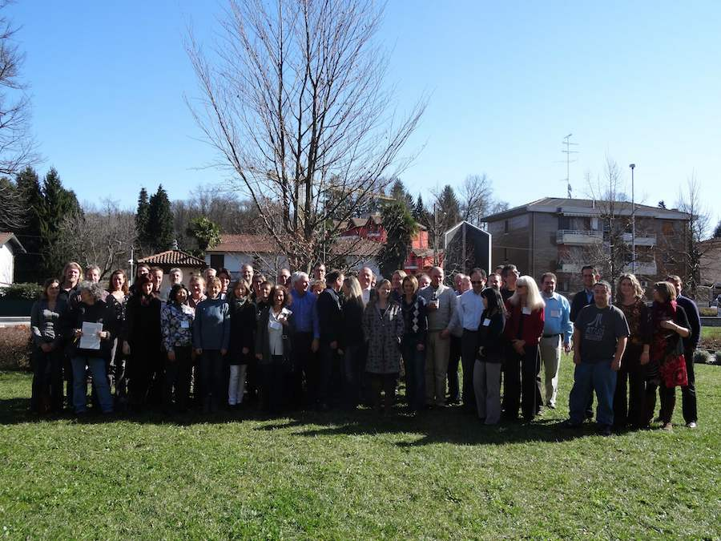

Title: Advancing Adverse Outcome Pathways for Integrated Toxicology and Regulatory Applications
Location: Somma Lombardy (Italy), March 2-7 2014
Chair: Natàlia Garcia-Reyero (Mississippi State University)
Organizing Committee: Edward Perkins (US Army), Sean Kennedy (Environment Canada), Teresa Lettieri (JRC), Knut Erik Tollefsen (NIVA), Dan Villeneuve (US EPA), Bart van der Burg (BioDetection Systems), Ksenia Groh (EAWAG), Rick Becker (American Chemistry Council), Marlies Halder (JRC), Maurice Whelan (JRC), Tara Barton-Maclaren (Health Canada).
Recent regulatory efforts in many countries have focused on a toxicological pathway-based vision for human health assessments relying on in vitro systems and predictive models to generate the toxicological data needed to evaluate chemical hazard. A pathway-based vision is equally applicable to ecological risk assessment. Pathway-based analysis of chemical effects opens numerous opportunities to apply non-traditional approaches for understanding the risks of chemical exposure. Similarities in molecular initiating events and key events that lead to toxicological outcomes provide a defensible framework for extrapolating chemical effects across species, even if the specific adverse outcomes differ between species. This opens the door for much more integrated approaches to chemical hazard evaluation in support of either human health or ecological risk assessment, that are based on consideration of pathway-conservation rather than the taxonomic origin of the text system. The objective is to maximize the predictive utility of available information and those data that can be generated most efficiently and cost effectively. However, these promising concepts and approaches for using pathway-based data in hazard screening and risk assessment need further development in order to realize their full potential.
This workshop focused on the use of the Adverse Outcome Pathway (AOP) concept as a framework to characterize, organize, and define predictive relationships between measurable key events that reflect the progression from a chemical-induced perturbation to an adverse outcome considered relevant to regulatory decision-making. Previous workshops have considered the utility of AOPs for supporting predictive ecotoxicology and development of less animal-intensive alternatives to existing chronic ecotoxicity tests. Additionally, the Organization for Economic Cooperation and Development (OECD) has initiated an AOP development workplan and published a guidance document on developing and assessing AOPs (http://www.oecd.org/env/ehs/testing/molecularscreeningandtoxicogenomics.htm). The OECD guidance and AOP Development Program integrate the AOP concept as defined within the ecotoxicology community with the mode of action (MOA) framework developed by a World Health Organization (WHO), International Programme on Chemical Safety (IPCS). Most notably, this introduced consideration of the Bradford-Hill criteria and weight of evidence evaluation in defining the relative level(s) of uncertainty associated with AOP-based extrapolation/predictions, a critical consideration when applying AOPs in a regulatory context. The objective of the present workshop was to build upon these previous efforts and provide consideration and expert opinion on the critical next steps required to advance the use and acceptance of the AOP framework to support integrated toxicology and regulatory decision-making. Specifically, the workshop participants addressed the following five topics:
Advancing Adverse Outcome Pathways for Integrated Toxicology and Regulatory Applications. Natalia Garcia-Reyero. Environ. Sci. Technol., 2015, 49 (1), pp 3–9.
Development and application of the adverse outcome pathway framework for understanding and predicting chronic toxicity: I. Challenges and research needs in ecotoxicology. Ksenia J. Groh, Raquel N. Carvalho, James K. Chipman, Nancy D. Denslow, Marlies Halder, Cheryl A. Murphy, Dick Roelofs, Alexandra Rolaki, Kristin Schirmer, Karen H. Watanabe. Chemosphere, 2015, Volume 120 (February 2015) Pages 764–777.
Development and application of the adverse outcome pathway framework for understanding and predicting chronic toxicity: II. A focus on growth impairment in fish. Ksenia J. Groh, Raquel N. Carvalho, James K. Chipman, Nancy D. Denslow, Marlies Halder, Cheryl A. Murphy, Dick Roelofs, Alexandra Rolaki, Kristin Schirmer, Karen H. Watanabe. Chemosphere, 2015, Volume 120 (February 2015) Pages 778–792.
Adverse Outcome Pathway (AOP) Development I: Strategies and Principles. Daniel L. Villeneuve, Doug Crump, Natàlia Garcia-Reyero, Markus Hecker, Thomas H. Hutchinson, Carlie A. LaLone, Brigitte Landesmann, Teresa Lettieri, Sharon Munn, Malgorzata Nepelska, Mary Ann Ottinger, Lucia Vergauwen, Maurice Whelan. Tox Sci., 2014, 142 (2): 312-320.
Adverse Outcome Pathway (AOP) Development II: Best Practices. Daniel L. Villeneuve, Doug Crump, Natàlia Garcia-Reyero, Markus Hecker, Thomas H. Hutchinson, Carlie A. LaLone, Brigitte Landesmann, Teresa Lettieri, Sharon Munn, Malgorzata Nepelska, Mary Ann Ottinger, Lucia Vergauwen, Maurice Whelan. Tox Sci., 2014, 142 (2): 321-330.
Increasing Scientific Confidence in Adverse Outcome Pathways: Application of Tailored Bradford-Hill Considerations for Evaluating Weight of Evidence. Richard A. Becker, Gerald T. Ankley, Stephen W. Edwards, Sean Kennedy, Igor Linkov, Bette Meek, Magdalini Sachana, Helmut Segner, Bart Van Der Burg, Daniel L. Villeneuve, Haruna Watanabe, Tara S. Barton-Maclaren. Reg. Toxicol. Pharmacol., 2015, Volume 72 (August 2015), Pages 514–537.
Adverse Outcome Pathways for Regulatory Applications: Examination of Four Case Studies With Different Degrees of Completeness and Scientific Confidence. Edward J Perkins, Philipp Antczak, Lyle Burgoon, Francesco Falciani, Steve Gutsell, Geoff Hodges, Aude Kienzler, Dries Knapen, Mary McBride, Catherine Willett. Tox Sci., 2015, 148 (1): 14-25.
Quantitative Adverse Outcome Pathways for Regulatory Applications. Edward J Perkins, Philipp Antczak, Lyle Burgoon, Francesco Falciani, Steve Gutsell, Geoff Hodges, Aude Kienzler, Dries Knapen, Mary McBride, Catherine Willett. In preparation.
Applying Adverse Outcome Pathways (AOPs) to support Integrated Approaches to Testing and Assessment (IATA). K.E. Tollefsen, S. Scholz, M.T. Cronin, S.W. Edwards, J. de Knecht, K. Crofton, N. Garcia-Reyero, T. Hartung, A. Worth, G. Patlewicz. Reg. Toxicol. Pharmacol., 2014, Volume 70 (December 2014), Pages 629–640.
Support for the workshop was provided by the American Chemistry Council, BioDetection Systems, European Centre for Ecotoxicology and Toxicology of Chemicals, Environment Canada, European Commission Directorate General Joint Research Center, Human Toxicology Project Consortium, International Life Sciences Institute - Health and Environmental Science Institute, Norwegian Institute for Water Research, Society for Environmental Toxicology and Chemistry, US Army Engineer Research and Development Center, and the US Environmental Protection Agency.
Gerald Ankley (US EPA), Philipp Antczac (University of Liverpool), Tara Barton-Maclaren (Health Canada), Richard Becker (American Chemistry Council), Lyle Burgoon (US EPA), Kevin Chipman (University of Birmingham), Kevin Crofton (US EPA), Mark Cronin (Liverpool John Moores University), Doug Crump (Environment Canada), Joop de Knecht (OECD), Nancy Denslow (University of Florida), Stephen Edwards (US EPA), Francesco Falciani (University of Liverpool), Ksenia Groh (EAWAG), Steve Gutsell (Unilever), Marlies Halder (Joint Research Center), Thomas Hartnung (John Hopkins University), Markus Hecker (University of Saskatchewan), Geoffrey Hodges (Unilever), Sean Kennedy (Environment Canada), Aude Kienzler (Joint Research Center), Dries Knapen (University of Antwerp), Carlie Lalone (University of Minnesota), Brigitte Landesmann (Joint Research Center), Teresa Lettieri (Joint Research Center), Igor Linkov (Joint Research Center), Alberto Martin Aparicio (ECHA), Mary McBride (Agilent), Bette Meek (University of Ottawa), Sharon Munn (Joint Research Center), Cheryl Murphy (Michigan State University), Raquel Carvalho (Joint Research Center), Tatiana Netzeva (ECHA), Edward Perkins (US Army ERDC), Dick Roelofs (VU University Amsterdam), Alexandra Rolaki (Joint Research Center), Magdalini Sachana (Joint Research Center), Kristin Schirmer (EAWAG), Stefan Scholz (UFZ), Helmut Segner (University of Bern), Grace Patlewicz (Dupont), Knut Erik Tollefsen (NIVA), Bart van der Burg (BioDetection Systems), Lucia Vergauwen (University of Antwerp), Damiano Vesentini (ECHA), Daniel Villeneuve (US EPA), Natalia Vinas (Mississippi State University), Haruna Watanabe (National Institute for Environmental Studies), Karen Watanabe (OHSU), Maurice Whelan (Joint Research Center), Catherine Willett (The Humane Society of the United States), Clemens Wittwehr (Joint Research Center), Andrew Worth (Joint Research Center).
